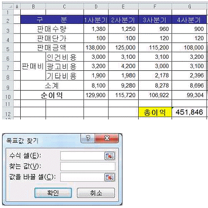
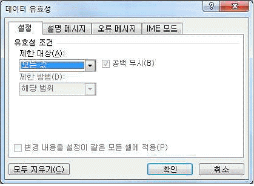
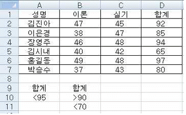
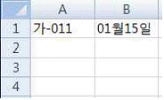
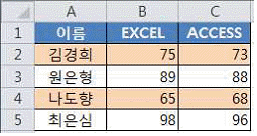
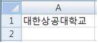
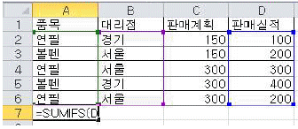
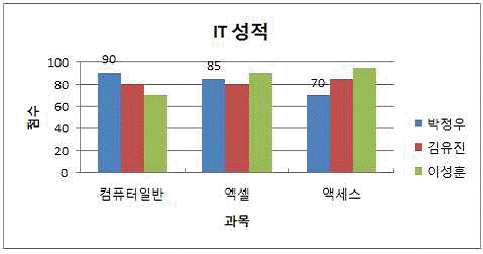
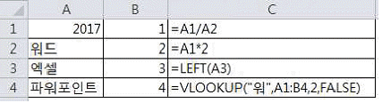

컴퓨터활용능력-2급 (2017-09-02 기출문제)
1과목: 컴퓨터 일반
1. 다음 중 모바일 멀티미디어 커뮤니케이션 서비스와 가장 거리가 먼 것은?
- 모바일 화상전화
- LBS
- DMB
- MMS
(정답률: 61%)

2. 다음 중 멀티미디어 하드웨어에 대한 설명으로 옳지 않은 것은?
- 사운드 카드의 샘플링이란 아날로그 소리 파형을 일정시간 간격으로 연속적인 측정을 통해 얻어진 각각의 소리의 진폭을 숫자로 표현하여 디지털 데이터로 생성하는 것을 말한다.
- MPEG 보드란 압축된 동영상 파일을 빠른 속도로 복원시켜 재생해 주는 장치이다.
- 비디오 오버레이 보드란 TV나 비디오를 보면서 컴퓨터 작업을 동시에 할 수 있도록 동영상 데이터를 비디오 카드의 데이터와 합성시켜 표현하는 장치이다.
- 그래픽 카드는 CPU에 의해 처리된 아날로그 데이터를 디지털로 변환하여 모니터로 보내는 장치이다.
(정답률: 57%)
3. 다음 중 정보 사회의 컴퓨터 범죄 예방과 대책으로 적절하지 않은 것은?
- 보호하고자 하는 컴퓨터나 정보에 비밀번호를 설정하고 주기적으로 변경한다.
- 바이러스 백신 프로그램을 설치하고 자동 업데이트로 설정한다.
- 정크메일로 의심이 가는 이메일은 본문을 확인한 후 즉시 삭제한다.
- Windows Update는 자동 설치를 기본으로 설정한다.
(정답률: 86%)
4. 다음 중 근거리 통신망(LAN)에 관한 설명으로 옳지 않은 것은?
- 비교적 전송 거리가 짧아 에러 발생률이 낮다.
- 반이중 방식의 통신을 한다.
- 자원 공유를 목적으로 컴퓨터들을 상호 연결한다.
- 프린터, 보조기억장치 등 주변장치들을 쉽게 공유할 수 있다.
(정답률: 74%)
5. 다음 중 전자우편에서 사용하는 POP3 프로토콜에 관한 설명으로 옳은 것은?
- 이메일을 전송할 때 필요로 하는 프로토콜이다.
- 원격 서버에 접속하여 이메일을 사용자 컴퓨터로 가져오기 위한 프로토콜이다.
- 멀티미디어 이메일을 주고 받기 위한 프로토콜이다.
- 이메일의 회신과 전체 회신을 가능하게 하는 프로토콜이다.
(정답률: 56%)
6. 다음 중 정보 보안을 위협하는 형태에 대한 설명으로 옳은 것은?
- 스니핑(Sniffing): 검증된 사람이 네트워크를 통해 데이터를 보낸 것처럼 데이터를 변조하여 접속을 시도한다.
- 피싱(Phishing): 적절한 사용자 동의 없이 사용자 정보를 수집하는 프로그램을 설치하여 사생활을 침해 한다.
- 스푸핑(Spoofing): 실제로는 악성 코드로 행동하지 않으면서 겉으로는 악성 코드인 것처럼 가장한다.
- 키로거(Key Logger): 키보드 상의 키 입력 캐치 프로그램을 이용하여 개인 정보를 빼낸다.
(정답률: 76%)
7. 다음 중 정보 통신 장비와 관련하여 리피터(Repeater)에 관한 설명으로 옳은 것은?
- 적절한 전송 경로를 선택하여 데이터를 전달하는 장비이다.
- 프로토콜이 다른 네트워크를 결합하는 장비이다.
- 감쇠된 전송 신호를 증폭하여 다음 구간으로 전달하는 장비이다.
- 같은 프로토콜을 사용하는 독립적인 2개의 근거리 통신망에 상호 접속하는 장비이다.
(정답률: 67%)
8. 다음 중 인터넷에서 사용하는 도메인 네임에 관한 설명으로 옳은 것은?
- IP 주소를 사람이 이해하기 쉬운 숫자 형태로 표현한 것이다.
- 소속 국가명, 소속 기관명, 소속 기관 종류, 호스트 컴퓨터명의 순으로 구성된다.
- 퀵돔(QuickDom)은 2단계 체제와 같이 도메인을 짧은 형태로 줄여 쓰는 것을 말한다.
- 국가가 다른 경우에는 중복된 도메인 네임을 사용할 수 있다.
(정답률: 64%)
9. 다음 중 추상화, 캡슐화, 상속성, 다형성 등의 특징을 지니고 있으며, 크고 복잡한 프로그램 구축이 어려운 절차형 언어의 문제점을 해결하기 위해 개발된 프로그래밍 기법은?
- 구조적 프로그래밍
- 객체지향 프로그래밍
- 하향식 프로그래밍
- 비주얼 프로그래밍
(정답률: 87%)
10. 다음 중 상용 소프트웨어가 출시되기 전에 미리 고객들에게 프로그램에 대한 평가를 수행하고자 제작한 소프트웨어로 옳은 것은?
- 알파(Alpha) 버전
- 베타(Beta) 버전
- 패치(Patch) 버전
- 데모(Demo) 버전
(정답률: 77%)
11. 다음 중 컴퓨터를 이용한 가상 현실(Virtual Reality)에 관한 설명으로 옳은 것은?
- 고화질 영상을 제작하여 텔레비전에 나타내는 기술이다.
- 고도의 컴퓨터 그래픽 기술과 3차원 기법을 통하여 현실의 세계처럼 구현하는 기술이다.
- 여러 영상을 통합하여 2차원 그래픽으로 표현하는 기술이다.
- 복잡한 데이터를 단순화시켜 컴퓨터 화면에 나타내는 기술이다.
(정답률: 89%)
12. 다음 중 컴퓨터에서 사용하는 ASCII 코드에 관한 설명으로 옳은 것은?
- 패리티 비트를 이용하여 오류 검출과 오류 교정이 가능하다.
- 표준 ASCII 코드는 3개의 존 비트와 4개의 디지트비트로 구성되며, 주로 대형 컴퓨터의 범용 코드로 사용된다.
- 표준 ASCII 코드는 7비트를 사용하여 영문 대소문자, 숫자, 문장 부호, 특수 제어 문자 등을 표현한다.
- 확장 ASCII 코드는 8비트를 사용하며 멀티미디어 데이터 표현에 적합하도록 확장된 코드표이다.
(정답률: 63%)
13. 다음 중 컴퓨터의 주기억장치인 RAM에 관한 설명으로 옳은 것은?
- 전원이 공급되지 않더라도 기억된 내용이 지워지지 않는다.
- 시스템에서 사용하는 BIOS, POST 등이 저장된다.
- 현재 사용 중인 응용 프로그램이나 데이터가 저장된다.
- 주로 하드디스크에서 사용되는 기억장치이다.
(정답률: 53%)
14. 다음 중 컴퓨터의 저장 매체 관리 방법으로 옳지 않은 것은?
- 주기적으로 디스크 정리, 검사, 조각 모음을 수행한다.
- 강한 자성 물체를 외장 하드디스크 주위에 놓지 않는다.
- 오랜 기간 동안 저장된 데이터는 재 저장한다.
- 예상치 않은 상황에 대비하여 주기적으로 백업하여 둔다.
(정답률: 77%)
15. 다음 중 Windows 7의 사용자 계정을 통해 사용할 수 있는 기능으로 옳지 않은 것은?(윈도우 10 검증 완료)
- 관리자 계정의 사용자는 다른 계정의 컴퓨터 사용시간을 제어할 수 있다.
- 관리자 계정의 사용자는 다른 계정의 등급 및 콘텐츠, 제목별로 게임을 제어할 수 있다.
- 표준 계정의 사용자는 컴퓨터 보안에 영향을 주는 설정을 변경할 수 있다.
- 표준 계정의 사용자는 컴퓨터에 설치된 대부분의 프로그램을 사용할 수 있고, 자신의 계정에 대한 암호 등을 설정할 수 있다.
(정답률: 76%)
16. 다음 중 바로 가기 아이콘에 대한 설명으로 옳지 않은 것은?
- 바로 가기 아이콘을 삭제해도 해당 프로그램은 지워지지 않는다.
- 바로 가기 아이콘은 폴더, 디스크 드라이버, 프린터 등 모든 항목에 대해 만들 수 있다.
- 바로 가기 아이콘은 실제 프로그램이 아니라 응용 프로그램의 경로를 기억하고 있는 아이콘이다.
- 바로 가기 아이콘의 확장자는'*.exe'이다.
(정답률: 72%)
17. 다음 중 Windows 7에서 작업 표시줄의 바로 가기 메뉴에서 설정할 수 있는 항목으로 옳지 않은 것은?(윈도우 10 검증 완료)
- 계단식 창 배열
- 창 가로 정렬 보기
- 작업 표시줄 잠금
- 아이콘 자동 정렬
(정답률: 69%)
18. 다음 중 Windows 7의 [Windows 탐색기]에 대한 설명으로 옳지 않은 것은?(윈도우 10 검증 완료)
- 컴퓨터에 설치된 디스크 드라이브, 파일 및 폴더 등을 관리하는 기능을 가진다.
- 폴더와 파일을 계층 구조로 표시하며, 폴더 앞의 기호는 하위 폴더가 있음을 의미한다.
- 현재 폴더에서 상위 폴더로 이동하려면 바로 가기 키인 <Home>키를 누른다.
- 검색 상자를 사용하여 파일이나 폴더를 찾을 수 있으며, 검색은 입력을 시작함과 동시에 시작된다.
(정답률: 69%)
19. 다음 중 Windows 7에서 제어판의 '프로그램 및 기능'에 대한 설명으로 옳지 않은 것은?(윈도우 10 검증 완료)
- Windows에 포함되어 있는 일부 프로그램 및 기능을 해제할 수 있으며, 기능 해제시 하드 디스크 공간의 크기도 줄어든다.
- 설치된 응용 프로그램의 제거, 변경 또는 복구 등의 작업을 할 수 있다.
- 컴퓨터에 설치된 업데이트 목록을 확인할 수 있으며 제거도 가능하다.
- [프로그램 및 기능]을 이용하여 프로그램을 제거하면 Windows가 작동하는데 영향을 미치지 않도록 프로그램이 정상적으로 삭제된다.
(정답률: 55%)
20. 다음 중 플래시 메모리에 대한 설명으로 옳지 않은 것은?
- 소비전력이 작다.
- 휘발성 메모리이다.
- 정보의 입출력이 자유롭다.
- 휴대전화, 디지털카메라, 게임기, USB 메모리 등에 널리 이용된다.
(정답률: 79%)
2과목: 스프레드시트 일반
21. 아래 워크시트에서 총이익[G12]이 500000이 되려면 4분기 판매수량[G3]이 얼마가 되어야 하는지 목표값 찾기를 이용하여 계산하고자 한다. 다음 중 [목표값 찾기] 대화상자에 입력할 내용이 순서대로 바르게 나열된 것은?

- $G$12, 500000, $G$3
- $G$3, 500000, $G$12
- $G$3, $G$12, 500000
- $G$12, $G$3, 500000
(정답률: 74%)
22. 다음 중 가상 분석 도구인 [데이터 표]에 대한 설명으로 옳지 않은 것은?
- 테스트 할 변수의 수에 따라 변수가 한 개이거나 두개인 데이터 표를 만들 수 있다.
- 데이터 표를 이용하여 입력된 데이터는 부분적으로 수정 또는 삭제할 수 있다.
- 워크시트가 다시 계산될 때마다 데이터 표도 변경 여부에 관계없이 다시 계산된다.
- 데이터 표의 결과값은 반드시 변화하는 변수를 포함한 수식으로 작성해야 한다.
(정답률: 45%)
23. 다음 중 [데이터 유효성] 대화상자의 [설정] 탭에서 '제한 대상'목록에 해당하지 않는 것은?

- 정수
- 소수점
- 목록
- 텍스트
(정답률: 59%)
24. 다음 중 아래 그림의 표에서 조건범위로 [A9:B11] 영역을 선택하여 고급필터를 실행한 결과의 레코드 수는 얼마인가?

- 0
- 3
- 4
- 6
(정답률: 74%)
25. 다음 중 아래 워크시트에서 [A1:B1] 영역을 선택한 후 채우기 핸들을 이용하여 [B3] 셀까지 드래그 했을 때 [A3] 셀, [B3] 셀의 값으로 옳은 것은?

- 다-011, 01월17일
- 가-013, 01월17일
- 가-013, 03월15일
- 다-011, 03월15일
(정답률: 80%)
26. 다음 중 데이터 입력에 대한 설명으로 옳지 않은 것은?
- 데이터를 입력하는 도중에 입력을 취소하려면 <ESC>키를 누른다.
- 셀 안에서 줄을 바꾸어 데이터를 입력하려면 <Alt>+<Enter> 키를 누른다.
- 텍스트, 텍스트/숫자 조합, 날짜, 시간 데이터는 셀에 입력하는 처음 몇 자가 해당 열의 기존 내용과 일치하면 자동으로 입력된다.
- 여러 셀에 동일한 데이터를 입력하려면 해당 셀을 범위로 지정하여 데이터를 입력한 후 <Ctrl>+<Enter> 키를 누른다.
(정답률: 55%)
27. 다음 중 매크로 작성 시 [매크로 기록] 대화상자에서 선택할 수 있는 매크로의 저장 위치로 옳지 않은 것은?
- 새 통합 문서
- 개인용 매크로 통합 문서
- 현재 통합 문서
- 작업 통합 문서
(정답률: 65%)
28. 다음 중 참조의 대상 범위로 사용하는 이름 정의 시 이름의 지정 방법에 대한 설명으로 옳지 않은 것은?
- 이름의 첫 글자로 밑줄(_)을 사용할 수 있다.
- 이름에 공백 문자는 포함할 수 없다.
- 'A1'과 같은 셀 참조 주소 이름은 사용할 수 없다.
- 여러 시트에서 동일한 이름으로 정의할 수 있다.
(정답률: 63%)
29. 다음 중 조건부 서식을 이용하여 [A2:C5] 영역에 EXCEL과 ACCESS 점수의 합계가 170이하인 행 전체에 셀 배경색을 지정하기 위한 수식으로 옳은 것은?

- =B$2+C$2<=170
- =$B2+$C2<=170
- =$B$2+$C$2<=170
- =B2+C2<=170
(정답률: 61%)
30. 다음 중 매크로를 실행하는 방법으로 옳지 않은 것은?
- 매크로 기록 시 <Alt>키 조합 바로 가기 키를 지정하여 매크로를 실행한다.
- 빠른 실행 도구 모음에 매크로 아이콘을 추가하여 매크로를 실행한다.
- <Alt>+<F8>키를 눌러 매크로 대화상자를 표시한 후 매크로를 선택하고 [실행] 단추를 클릭하여 실행한다.
- 그림, 클립 아트, 도형 등의 그래픽 개체에 매크로 이름을 연결한 후 그래픽 개체 영역을 클릭하여 실행한다.
(정답률: 54%)
31. 다음 중 아래 워크시트의 [A2] 셀에 수식을 작성하는 경우 수식의 결과가 다른 하나는?

- =MID(A1,SEARCH("대",A1)+2,5)
- =RIGHT(A1,LEN(A1)-2)
- =RIGHT(A1,FIND("대",A1)+5)
- =MID(A1,FIND("대",A1)+2,5)
(정답률: 54%)
32. 다음 중 엑셀의 날짜 및 시간 데이터 관련 함수에 대한 설명으로 옳지 않은 것은?
- 날짜 데이터는 순차적인 일련번호로 저장되기 때문에 날짜 데이터를 이용한 수식을 작성할 수 있다.
- 시간 데이터는 날짜의 일부로 인식하여 소수로 저장되며, 낮 12시는 0.5로 계산된다.
- TODAY 함수는 셀이 활성화 되거나 워크시트가 계산될 때 또는 함수가 포함된 매크로가 실행될 때마다 시스템으로부터 현재 날짜를 업데이트한다.
- WEEKDAY 함수는 날짜에 해당하는 요일을 구하는 함수로 Return_type 인수를 생략하는 경우 '일월화수목금토' 중 해당하는 한 자리 요일이 텍스트 값으로 반환된다.
(정답률: 55%)
33. 다음 중 시트 보호에 관한 설명으로 옳지 않은 것은?
- 차트 시트의 경우 차트 내용만 변경하지 못하도록 보호할 수 있다.
- '셀 서식' 대화상자의 '보호' 탭에서 '잠금'이 해제된 셀은 보호되지 않는다.
- 시트 보호 설정 시 암호의 설정은 필수 사항이다.
- 시트 보호가 설정된 상태에서 데이터를 수정하면 경고 메시지가 나타난다.
(정답률: 62%)
34. 다음 중 [페이지 설정] 대화상자의 [머리글/바닥글] 탭에 대한 설명으로 옳지 않은 것은?
- 홀수 페이지의 머리글 및 바닥글을 짝수 페이지와 다르게 지정하려면 '짝수와 홀수 페이지를 다르게 지정'을 선택한다.
- 인쇄되는 첫 번째 페이지에서 머리글과 바닥글을 표시하지 않으려면 '첫 페이지를 다르게 지정'을 선택한 후 머리글과 바닥글 편집에서 첫 페이지 머리글과 첫 페이지 바닥글에 아무것도 설정하지 않는다.
- 인쇄될 워크시트를 워크시트의 실제 크기의 백분율에 따라 확대ㆍ축소하려면 '문서에 맞게 배율 조정'을 선택한다.
- 머리글 또는 바닥글을 표시하기에 충분한 머리글 또는 바닥글 여백을 확보하려면 '페이지 여백에 맞추기'를 선택한다.
(정답률: 43%)
35. 다음 중 [인쇄 미리 보기]에 관한 설명으로 옳지 않은 것은?
- [인쇄 미리 보기] 창에서 셀 너비를 조절할 수 있으나 워크시트에는 변경된 너비가 적용되지 않는다.
- [인쇄 미리 보기]를 실행한 상태에서 [페이지 설정]을 클릭하여 [여백] 탭에서 여백을 조절할 수 있다.
- [인쇄 미리 보기] 상태에서 '확대/축소'를 누르면 화면에는 적용되지만 실제 인쇄 시에는 적용되지 않는다.
- [인쇄 미리 보기]를 실행한 상태에서 [여백 표시]를 체크한 후 마우스 끌기를 통하여 여백을 조절할 수 있다.
(정답률: 47%)
36. 다음 중 [A7] 셀에 수식 '=SUMIFS(D2:D6,A2:A6, "연필", B2:B6, "서울")'을 입력한 경우 결과 값으로 옳은 것은?

- 100
- 500
- 600
- 750
(정답률: 78%)
37. 다음 중 차트 편집에 대한 내용으로 옳지 않은 것은?
- 차트의 데이터 범위에서 일부 데이터를 차트에 표시하지 않으려면 행이나 열을 '숨기기'로 지정한다.
- 3차원 차트는 혼합형 차트로 만들 수 없다.
- <F11>키를 눌러 차트 시트를 만들 수 있다.
- 여러 데이터 계열을 선택하여 한 번에 차트 종류를 변경할 수 있다.
(정답률: 44%)
38. 다음 중 차트의 데이터 계열 서식에 대한 설명으로 옳지 않은 것은?
- 계열 겹치기 수치를 양수로 지정하면 데이터 계열 사이가 벌어진다.
- 차트에서 데이터 계열의 간격을 넓게 또는 좁게 지정할 수 있다.
- 특정 데이터 계열의 값이 다른 데이터 계열의 값과 차이가 많이 나거나 데이터 형식이 혼합되어 있는 경우 보조 세로(값) 축에 하나 이상의 데이터 계열을 나타낼 수 있다.
- 보조 축에 해당되는 데이터 계열을 구분하기 위하여 보조 축의 데이터 계열만 선택하여 차트 종류를 변경할 수 있다.
(정답률: 62%)
39. 다음 중 아래 차트에 설정되어 있지 않은 차트 구성 요소는?

- 차트 제목
- 가로 (항목) 축 보조 눈금선
- 데이터 레이블
- 범례
(정답률: 68%)
40. 다음 중 아래 워크시트에서 C열의 수식을 실행했을 때 화면에 표시되는 결과로 옳지 않은 것은?

- [C1] 셀 : #VALUE!
- [C2] 셀 : 4034
- [C3] 셀 : #VALUE!
- [C4] 셀 : #N/A
(정답률: 57%)